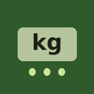

Zaaihulp
Afdraaien, wegen en mengen bij de zaaimachine
✓
Je hebt de app al
Open ZaaihulpInstalleren met één tik
Daarna staat het icoon bij je apps.
✓
Geïnstalleerd
Je vindt Zaaihulp nu bij je apps. Open hem voortaan via het icoon.
Installeren op Android
- Tik rechtsboven op de drie puntjes
- Kies App installeren of Toevoegen aan startscherm
- Tik op Installeren. Het icoon staat daarna bij je apps.
Zie je dat niet? Open deze link in Chrome: houd de link ingedrukt en kies "Openen in Chrome", of kopieer hem naar Chrome.
Installeren op iPhone
- Tik onderin op het deel-knopje
- Scroll omlaag en kies Zet op beginscherm
- Tik rechtsboven op Voeg toe. Het icoon staat daarna op je beginscherm.
Staat "Zet op beginscherm" er niet bij? Dan is de link geopend in WhatsApp of een andere app. Tik eerst op het Safari-kompasje of op "Open in Safari", en doe het daar opnieuw.
Je gebruikt niet Safari. Het werkt het betrouwbaarst in Safari: kopieer de link en plak hem daar.
Open dit op je telefoon
Scan de code met de camera van je telefoon. Dan krijg je daar de stappen.
Goed om te weten
- Open de app altijd via het icoon, dan blijven je gegevens bewaard.
- Werkt ook zonder internet, als je hem één keer met internet hebt geopend.
- Alles wat je invult blijft op je eigen telefoon.
- Gegevens van iemand anders overnemen? Plak de code in de app bij Delen en overzetten → Importeren.
Andere telefoon? Toon alle stappen
Android (Chrome)
- Open de link in Chrome en tik rechtsboven op de drie puntjes ⋮
- Kies App installeren of Toevoegen aan startscherm
iPhone (Safari)
- Open de link in Safari en tik onderin op het deel-knopje
- Kies Zet op beginscherm en tik op Voeg toe